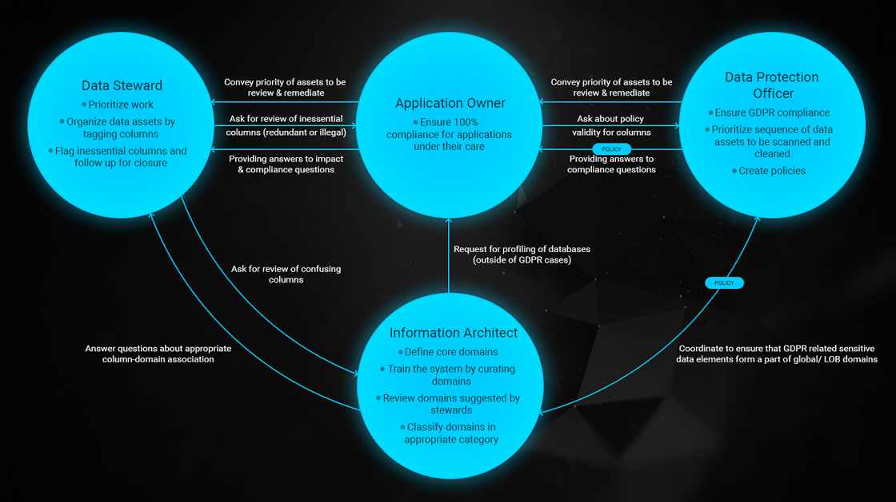

<!--
@license
Copyright (c) 2016 The Polymer Project Authors. All rights reserved.
This code may only be used under the BSD style license found at http://polymer.github.io/LICENSE.txt
The complete set of authors may be found at http://polymer.github.io/AUTHORS.txt
The complete set of contributors may be found at http://polymer.github.io/CONTRIBUTORS.txt
Code distributed by Google as part of the polymer project is also
subject to an additional IP rights grant found at http://polymer.github.io/PATENTS.txt
-->
<link rel="import" href="../bower_components/polymer/polymer.html">
<link rel="import" href="shared-styles.html">
<link rel="import" href="page-layout.html">
<dom-module id="lob-ecosystem">
    <template>
        <style include="shared-styles">
             :host {
                height: 100%;
            }

             :host img {
                width: 100%;
            }
        </style>
        <page-layout heading="LOB Ecosystem">
            <div slot="body">
                
            </div>
        </page-layout>
    </template>
    <script>
        Polymer({
            is: 'lob-ecosystem',
        });
    </script>
</dom-module>